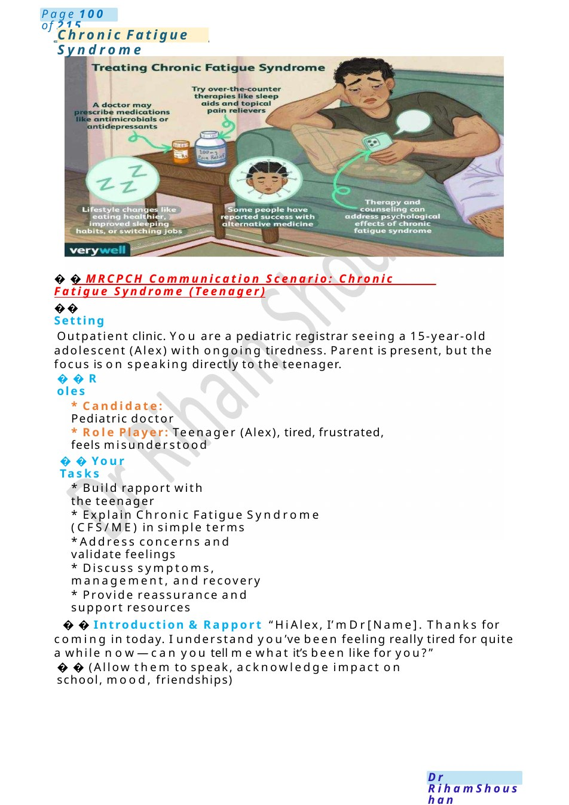
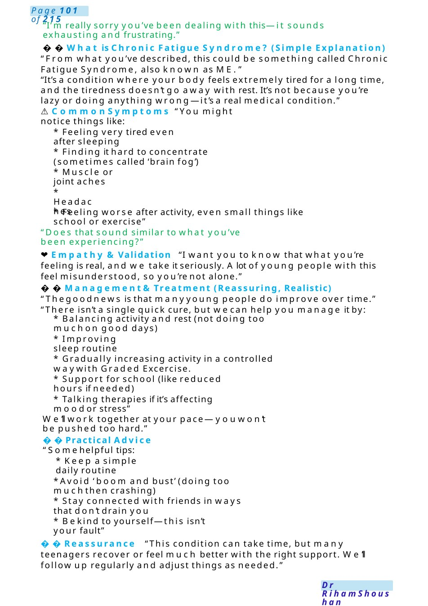
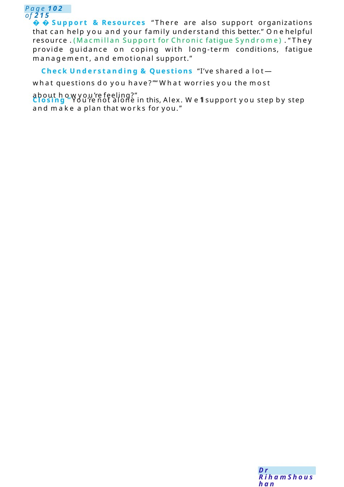
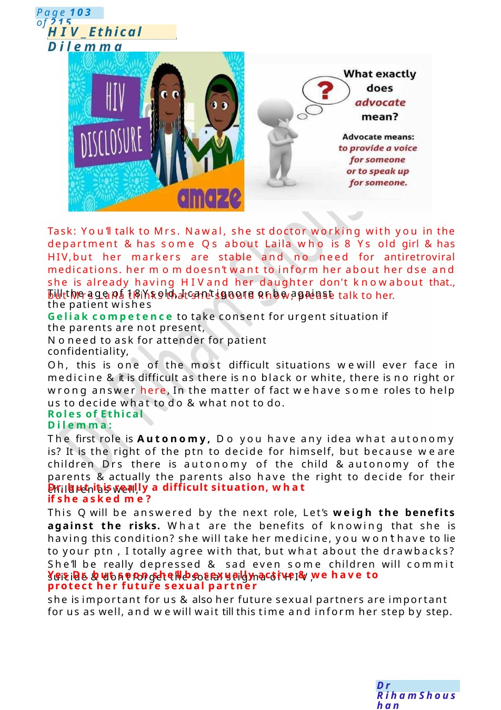

Chronic Fatigue Syndrome
MRCPCH Communication Scenario: Chronic Fatigue Syndrome (Teenager) Outpatient clinic. You are a pediatric registrar seeing a 15-year-old adolescent (Alex) with ongoing tiredness. Parent is present, but the focus is on speaking directly to the teenager.
Scenario Summary
MRCPCH Communication Scenario: Chronic Fatigue Syndrome (Teenager) Outpatient clinic. You are a pediatric registrar seeing a 15-year-old adolescent (Alex) with ongoing tiredness. Parent is present, but the focus is on speaking directly to the teenager.
Full Original Scenario

Chronic Fatigue Syndrome
MRCPCH Communication Scenario: Chronic Fatigue Syndrome (Teenager)
Setting
Outpatient clinic. You are a pediatric registrar seeing a 15-year-old adolescent (Alex) with ongoing tiredness. Parent is present, but the focus is on speaking directly to the teenager.
Roles
- Candidate: Pediatric doctor
- Role Player: Teenager (Alex), tired, frustrated, feels misunderstood
Your Tasks
- Build rapport with the teenager
- Explain Chronic Fatigue Syndrome (CFS/ME) in simple terms
- Address concerns and validate feelings
- Discuss symptoms, management, and recovery
- Provide reassurance and support resources
Introduction &Rapport “Hi Alex, I’m Dr[Name]. Thanks for coming in today. I understand you’ve been feeling really tired for quite a while now—can you tell mewhat it’s been like for you?”
(Allow them to speak, acknowledge impact on school, mood, friendships)

“I’m really sorry you’ve been dealing with this—it sounds exhausting and frustrating.”
What is Chronic Fatigue Syndrome? (Simple Explanation) “From what you’ve described, this could be something called Chronic Fatigue Syndrome, also known as ME.”
“It’s a condition where your body feels extremely tired for a long time, and the tiredness doesn’t go away with rest. It’s not because you’re lazy or doing anything wrong—it’s a real medical condition.”
- ️Common Symptoms “You might notice things like:
- Feeling very tired even after sleeping
- Finding it hard to concentrate (sometimes called ‘brain fog’)
- Muscle or joint aches
- Headaches
- Feeling worse after activity, even small things like school or exercise”
“Does that sound similar to what you’ve been experiencing?”
❤️Empathy &Validation “I want you to know that what you’re feeling is real, and we take it seriously. Alot of young people with this feel misunderstood, so you’re not alone.”
Management&Treatment (Reassuring, Realistic) “Thegoodnews is that manyyoung people do improve over time.” “There isn’t a single quick cure, but wecan help you manage it by:
- Balancing activity and rest (not doing too muchon good days)
- Improving sleep routine
- Gradually increasing activity in a controlled waywith Graded Excercise.
- Support for school (like reduced hours if needed)
- Talking therapies if it’s affecting moodor stress”
We’ll work together at your pace—youwon’t be pushed too hard.”
Practical Advice “Somehelpful tips:
- Keep a simple daily routine
- Avoid ‘boom and bust’ (doing too muchthen crashing)
- Stay connected with friends in ways that don’t drain you
- Bekind to yourself—this isn’t your fault”
Reassurance “This condition can take time, but many teenagers recover or feel much better with the right support. We’ll follow up regularly and adjust things as needed.”

Support &Resources “There are also support organizations that can help you and your family understand this better.” Onehelpful resource . (Macmillan Support for Chronic fatigue Syndrome) . “They provide guidance on coping with long-term conditions, fatigue management, and emotional support.”
❓Check Understanding &Questions “I’ve shared a lot—what questions do you have?”“What worries you the most about howyou’re feeling?”
Closing “You’re not alone in this, Alex. We’ll support you step by step and make a plan that works for you.”

HIV_Ethical Dilemma
Task: You’ll talk to Mrs. Nawal, she st doctor working with you in the department &has some Qs about Laila who is 8 Ys old girl &has HIV,but her markers are stable and no need for antiretroviral medications. her momdoesn’t want to inform her about her dse and she is already having HIVand her daughter don't knowabout that., but Mrs Laila thinks that she should know, please talk to her.
Till the age of 18Ysold, I can’t ignore or be against the patient wishes
Geliak competence to take consent for urgent situation if the parents are not present,
Noneed to ask for attender for patient confidentiality,
Oh, this is one of the most difficult situations wewill ever face in medicine &it is difficult as there is no black or white, there is no right or wrong answer here, In the matter of fact wehave some roles to help us to decide what to do &what not to do.
Roles of Ethical Dilemma:
The first role is Autonomy, Do you have any idea what autonomy is? It is the right of the ptn to decide for himself, but because we are children Drs there is autonomy of the child &autonomy of the parents &actually the parents also have the right to decide for their children as well,
Dr, but it is really a difficult situation, what if she asked me?
This Qwill be answered by the next role, Let’s weigh the benefits against the risks. What are the benefits of knowing that she is having this condition? she will take her medicine, you won’t have to lie to your ptn , I totally agree with that, but what about the drawbacks? She’ll be really depressed & sad even some children will commit suicide &don’t forget the social stigma of HIV,
Yes Dr, but soon she’ll be sexually active &we have to protect her future sexual partner
she is important for us &also her future sexual partners are important for us as well, and wewill wait till this time and inform her step by step.